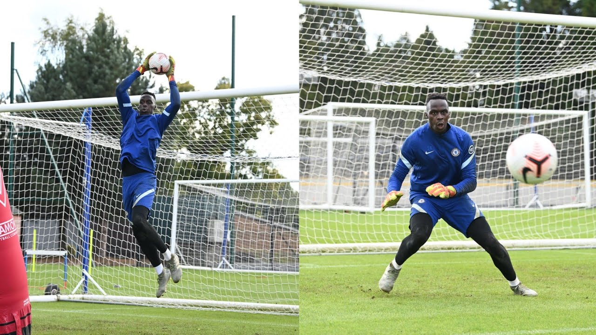

EDOUARD MENDY
EDOUARD MENDYเขากลายเป็นขวัญใจของแฟนบอลและเพื่อนร่วมทีมอย่างรวดเร็ว ด้วยความปราดเปรียวและปฏิกิริยาที่ทำให้เจ้าตัวกลายเป็นมือกาวที่ยอดเยี่ยม นอกจากนี้ เมนดี้ ยังมีจุดเด่นในการเล่นลูกกลางอากาศ แถมยังใช้เท้าเล่นกับบอลได้ดีอีกด้วย
การเริ่มต้นที่น่าประทับใจของ เมนดี้ กับเชลซี รวมถึงคลีนชีตต่อเนื่อง 6 นัด ระหว่างเดือนตุลาคมและพฤศจิกายน ผู้รักษาประตูรายนี้สั่งการในพื้นที่ได้ดี และโชว์เซฟสำคัญหลายครั้งในเกมที่เดอะ บลูส์ เอาชนะคริสตัล พาเลซ, คราสโนดาร์, เบิร์นลี่ย์ รวมทั้งแรนส์ อดีตต้นสังกัดของเขา จากการแข่งขันในประเทศและฟุตบอลยุโรป นอกจากนี้เขายังโชว์ความหนึบในเกมที่โอลด์ แทรฟฟอร์ด ช่วยให้พวกเราบุกไปแบ่งแต้มมาจากแมนเชสเตอร์ ยูไนเต็ด
เขาโชว์การเซฟสำคัญในเดือนธันวาคมที่พวกเราเอาชนะลีดส์ ได้ลงเล่นต่อหน้าแฟนบอลส่วนหนึ่งที่สแตมฟอร์ด บริดจ์ โดยทีมของเราก้าวไปยืนหัวตารางของพรีเมียร์ ลีก โดยมีคะแนนมากกว่าคู่แข่ง 3 แต้ม
เมนดี้ เป็นกำลังสำคัญในความสำเร็จจากรายการแชมเปี้ยนส์ ลีก ซึ่งอิมแพ็คต์ของเขาถูกเน้นย้ำให้เห็นจากสถิติการเก็บคลีนชีต 9 นัด ช่วยพวกเราทะยานคว้าแชมป์ในรอบชิงชนะเลิศช่วงปลายเดือนพฤษภาคม ไม่มีผู้รักษาประตูคนใดเก็บคลีนชีตได้มากกว่าเขาในการแข่งขันเวทีสูงสุดของยุโรปในฤดูกาลประเดิมสนาม
เขาโชว์ความนิ่งให้เห็นโดยเชลซีผ่านทั้งแอตเลติโก้ มาดริด และปอร์โต้ เข้าไปถึงรอบรองชนะเลิศ โดยเสียประตูแค่ลูกเดียวจาก 4 นัดดังกล่าว เมนดี้ยังแสดงผลงานที่น่าประทับใจในรอบตัดเชือกซึ่งพวกเราเอาชนะเรอัล มาดริดได้เช่นกัน ก่อนจะมีฟอร์มสุดแกร่งในเกมที่พวกเรายัดเยียดความปราชัยให้กับแมนเชสเตอร์ ซิตี้ในรอบชิงชนะเลิศ ซึ่งเขาเซฟลูกยิงของ ราฮีม สเตอร์ลิ่ง ช่วงต้นเกมไว้ได้
ผลงานของเขาในฤดูกาลแรกกับสโมสร ทำให้เจ้าตัวถูกเสนอชื่นลุ้นรางวัลยาชิน โทรฟี่ ซึ่งเป็นรางวัลสำหรับผู้รักษาประตูที่ดีที่สุดในเกมลูกหนัง โดยเมนดี้เป็นเพียงแค่นายทวารคนที่ 2 ในประวัติศาสตร์สโมสรเชลซีที่มีชื่อเข้าร่วมชิงรางวัลชิ้นนี้
แม้จะเกิดในประเทศฝรั่งเศส ทว่าเมนดี้เลือกที่จะรับใช้ทีมชาติเซเนกัล โดยเป็นประเทศบ้านเกิดคุณแม่ของเขา เจ้าตัวลงเฝ้าเสาไปแล้ว 8 นัดด้วยกัน
พ่อของเมนดี้เป็นชาวกินี-บิสเซา และเมนดี้เองก็เคยมีชื่อติดทีมชาติกินี-บิสเซา ในเกมอุ่นเครื่องกับทีมชาติโปรตุเกส เมื่อปี 2016 ทว่าเขาปฏิเสธเลือกลงเล่นให้กินี-บิสเซา ชุดสู้ศึกแอฟริกัน คัพ ออฟ เนชั่นส์ 2017 เวลาต่อมาเจ้าตัวเลือกเล่นให้ทีมชาติเซเนกัล และได้ลงเดบิวต์ไปเมื่อปี 2018
นายทวารวัย 28 ปีรายนี้ไม่ใช่ผู้รักษาประตูคนแรกที่ย้ายจากแรนส์มาอยู่กับเชลซี เพตเตอร์ เช็ก เคยเดินในเส้นทางนี้มาแล้วเมื่อปี 2004
SOCIAL MEDIA
 |
|